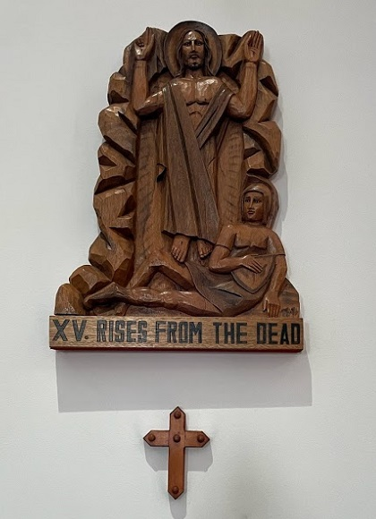

I told you at the start, my other self, my life was not complete until I crowned it by my death. Your "way" is not complete unless you crown it by your life.
Accept each moment as it comes to you, with faith and trust that all that happens has my mark on it. A simple fiat is all it takes; a breathing in your heart, "I will it, Lord."